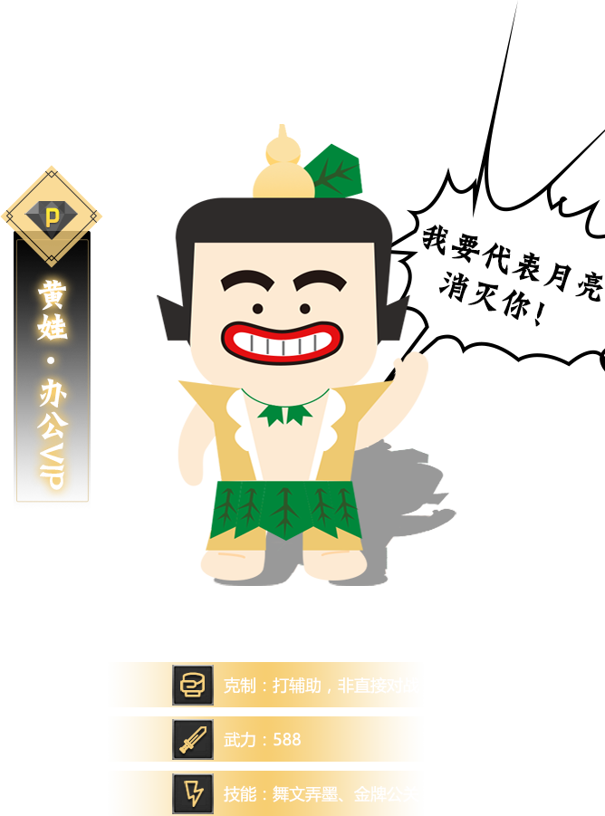

身子透明来去无影，机灵敏捷，能直接融入到任何场景中。坐拥550万png元素，时常能激发灵感为设计村的人出谋划策。拿手绝技是撕去妖怪伪装，净化其身，将其收入囊中。

有横图/竖图/方图/套图四种形态。能将目标传送到简约/商务/文艺/卡通/纹理/摄影/电商/中国风/党政建设等风格的200万种场景中。
装备最全，自身包含作战所需的背景/元素/字体排版，可直接参与到战斗中。能在PSD，AI，EPS，CDR四界中来去自如。更有胎化易形之术，可将身体的各部位随意拆解，重新组装。
最稳重智慧，是版权怪的终极克星。同时手握元素/背景/摄影图三大法器，对所有妖怪都有很高战斗力。所在之处自动形成结界，提前屏蔽众妖怪。出世便庇护了万家企业规避风险。

黑娃作为金牌公关，能用2000种方式为不同职业书写简历，在战前提高士气。更能做3w套精美PPT展示战前计划/展示战后经验总结/展示战斗成果。出生半年便赢得了1.5W+企业的青睐。
设计村文艺委员，能观听近50万种千里之外的视频和音效和配乐。包含AE模板/背景视频/实拍视频。囊括自然/生活/影视/游戏音效，和各种曲风的配乐，满足文娱需要，额外提升战斗力。
是葫芦兄弟的集合体，集六兄弟神技于一身，消耗却不到总体的四成。吸收足够能量，更能分身成10个同时作战。是图片素材界战无不胜的绝对王者！